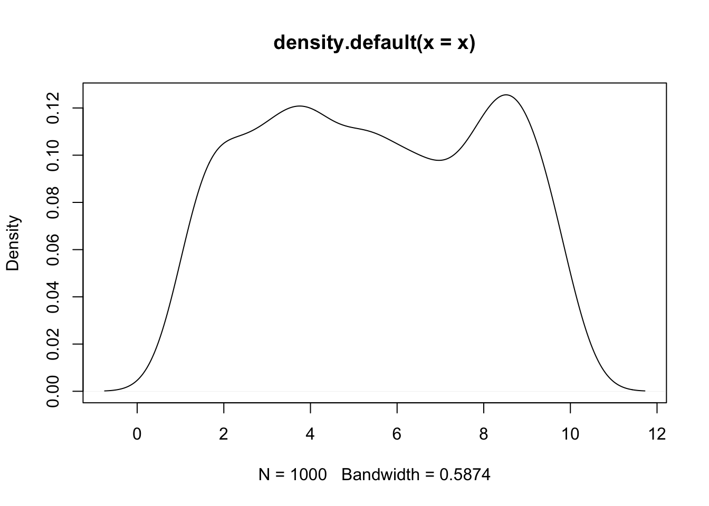

Chapter 1 R basic
Preface
Description here
1.1 RStudio 基本操作
1.1.1 執行R Markdown
- Using
Cmd+Enter(Ctrl+Enterin Window) to excute the line where your cursor is located. - Using
Cmd(Ctrl)+Shift+Enterto run all code in a cell - Using
Cmd(Ctrl)+Option(Alt)+ito insert a new cell - Using mouse to select multiple lines, then
Cmd(Ctrl)+Shift+cto comment/uncomment multiple lines.
## [1] 4 8 12 16 201.1.2 安裝與載入套件
套件的使用分為安裝和載入兩個動作。通常安裝好R的時候就已經安裝好基本base套件。當執行R時便會將base套件預載入程式的執行環境中。非常多的R使用者會編寫第三方套件，並且將這些套件開放給群眾使用。通常這些套件已經被上載到R cran提供下載。而R cran上的套件我們可以使用install.packages("package_name")來自動安裝到我們的電腦中。
tidyverse, caret, jiebaR, stm, sf
1.1.3 載入第三方套件
這些第三方套件被安裝好後，還需要被加載到程式的執行環境中才可以使用。因此要用library(package_name)將其載入。
## Warning: package 'httr' was built under R version 3.5.2library(package_name)載入已經安裝好的jsonlite與httr
1.2 Hellow World! 載入資料
1.2.1 載入Dcard資料
先不要去管以下程式碼fromJSON(content(GET(url), "text"))是什麼意思，先著重在語言的形式。通常一個函式會寫為func_name()，所以上述其實是三個函式由內而外一層套一層，從最內層開始往外做。這其實很make-sense，因為如果你有一個數學式(1 + (3-3)/2)/8，也是會從最裡面那層做出來。
url <- "https://www.dcard.tw/_api/forums/relationship/posts?popular=true"
res <- fromJSON(content(GET(url), "text"))
dplyr::glimpse(res)## Observations: 30
## Variables: 33
## $ id <int> 233008068, 233062888, 233066495, 233061385, 23306…
## $ title <chr> "#2/13更連結 曬照 閃光團v.s單身汪攻防戰！", "洗澡的小情趣", "早上起床發現...…
## $ excerpt <chr> "#2/13 更，WOW~看到兩邊人馬的熱烈曬照，販販刷留言刷得很開心吶～～～好多甜甜的閃閃的告白…
## $ anonymousSchool <lgl> FALSE, FALSE, TRUE, TRUE, TRUE, TRUE, FALSE, TRUE…
## $ anonymousDepartment <lgl> TRUE, TRUE, TRUE, TRUE, TRUE, TRUE, TRUE, TRUE, T…
## $ pinned <lgl> TRUE, FALSE, FALSE, FALSE, FALSE, FALSE, FALSE, F…
## $ forumId <chr> "42851318-b9e2-4a75-8a05-9fe180becefe", "42851318…
## $ replyId <int> NA, NA, NA, 233054425, NA, NA, NA, NA, 233055406,…
## $ createdAt <chr> "2020-02-03T10:10:21.780Z", "2020-02-12T11:04:15.…
## $ updatedAt <chr> "2020-02-13T15:19:06.798Z", "2020-02-13T16:00:40.…
## $ commentCount <int> 989, 75, 80, 1017, 210, 68, 4717, 498, 239, 31, 4…
## $ likeCount <int> 2456, 8950, 3945, 3895, 3491, 3462, 2884, 2198, 1…
## $ withNickname <lgl> TRUE, TRUE, FALSE, FALSE, FALSE, FALSE, TRUE, FAL…
## $ tags <list> [<>, <>, <>, <>, "HIDE_THUMBNAIL", "HIDE_THUMBNA…
## $ topics <list> [<"單身狗", "愛你3000次", "閃光團", "送禮", "情人節">, <"男友", …
## $ meta <df[,2]> <data.frame[26 x 2]>
## $ forumName <chr> "感情", "感情", "感情", "感情", "感情", "感情", "感情", "感情", "…
## $ forumAlias <chr> "relationship", "relationship", "relationship", "…
## $ gender <chr> "D", "F", "F", "M", "F", "M", "M", "F", "M", "F",…
## $ school <chr> "好物縱火販", "シカマロ", NA, NA, NA, NA, "好小子", NA, "國立清華…
## $ department <chr> "ec_firemaker", "naoko", NA, NA, NA, NA, "toyot",…
## $ replyTitle <chr> NA, NA, NA, "2020還單身的都給我出來", NA, NA, NA, NA, "男友的…
## $ mediaMeta <list> [<data.frame[7 x 8]>, <data.frame[3 x 10]>, <dat…
## $ reactions <list> [<data.frame[6 x 2]>, <data.frame[4 x 2]>, <data…
## $ hidden <lgl> FALSE, FALSE, FALSE, FALSE, FALSE, FALSE, FALSE, …
## $ customStyle <df[,3]> <data.frame[26 x 3]>
## $ isSuspiciousAccount <lgl> FALSE, FALSE, FALSE, FALSE, FALSE, FALSE, FALSE, …
## $ layout <chr> "classic", "classic", "classic", "classic", "clas…
## $ withImages <lgl> TRUE, TRUE, TRUE, FALSE, FALSE, FALSE, TRUE, FALS…
## $ withVideos <lgl> FALSE, FALSE, FALSE, FALSE, FALSE, FALSE, FALSE, …
## $ media <list> [<data.frame[6 x 1]>, <data.frame[2 x 1]>, <data…
## $ reportReasonText <chr> "", "", "", "", "", "", "", "", "", "", "", "", "…
## $ postAvatar <chr> "", "", "", "", "", "", "", "", "", "", "", "", "…## id title
## 1 233008068 #2/13更連結 曬照 閃光團v.s單身汪攻防戰！
## 2 233062888 洗澡的小情趣
## 3 233066495 早上起床發現...
## 4 233061385 2020單身脫魯 集氣許願樓
## 5 233063657 讓我體驗有男友的感覺
## 6 233066796 最嚮往的情侶生活模式
## excerpt
## 1 #2/13 更，WOW~看到兩邊人馬的熱烈曬照，販販刷留言刷得很開心吶～～～好多甜甜的閃閃的告白好ㄘ好ㄘヾ（´︶`*）ﾉ，更多好笑、可愛的狗勾....啊腫麼好多都4柴（´･ω･`）？（（嗯，有空來做留
## 2 男友️以下稱他為 那君，我和那君每天都會一起洗澡，昨天，我一如往常的低頭洗著我的頭髮（搓搓搓，那君：「我頭髮好像變長了欸！\U0001f929」我：「嗯？是喔」（努力的搓搓搓，兩人都沒有說話的，過了一小段時間後，那
## 3 今天早上起床之後突然回頭看到男友的手，咦！，他的手什麼時候這麼好看ㄌ！，好～再來一張，然後突然想到我的相簿裡有！剝蝦的手，好想當那隻蝦（⁎⁍̴̛\u1d17⁍̴̛⁎）（別ㄟ！，難怪我每次都超愛牽他的手，或是把他
## 4 我想要脫魯 我想要脫魯 我想要脫魯，很重要許願三次，集氣集起來，祝2020單身狗 天上掉下來男/女朋友，------------------------------------------------
## 5 母胎單的朋友表示，說一句話讓她也能體驗有男友的感覺，所以姐妹們也是很努力，只是後面的對話越來越好笑，1 你要那麼想，我也沒有辦法。2 她只是朋友/妹妹而已。3 多喝熱水。4 沒事的話我打遊戲去了。5
## 6 彼此都有一份穩定的工作，一起存錢買房，一起分享彼此工作上的大小事，當對方傾訴的垃圾桶，養隻陪伴彼此的寵物，每個禮拜兩人如果都有共同休假的日子，早上一起去吃個早午餐，下午去看場電影、遛遛狗；晚上可以自己
## anonymousSchool anonymousDepartment pinned
## 1 FALSE TRUE TRUE
## 2 FALSE TRUE FALSE
## 3 TRUE TRUE FALSE
## 4 TRUE TRUE FALSE
## 5 TRUE TRUE FALSE
## 6 TRUE TRUE FALSE
## forumId replyId createdAt
## 1 42851318-b9e2-4a75-8a05-9fe180becefe NA 2020-02-03T10:10:21.780Z
## 2 42851318-b9e2-4a75-8a05-9fe180becefe NA 2020-02-12T11:04:15.011Z
## 3 42851318-b9e2-4a75-8a05-9fe180becefe NA 2020-02-13T02:58:32.517Z
## 4 42851318-b9e2-4a75-8a05-9fe180becefe 233054425 2020-02-12T06:15:08.879Z
## 5 42851318-b9e2-4a75-8a05-9fe180becefe NA 2020-02-12T13:27:18.597Z
## 6 42851318-b9e2-4a75-8a05-9fe180becefe NA 2020-02-13T04:21:14.383Z
## updatedAt commentCount likeCount withNickname tags
## 1 2020-02-13T15:19:06.798Z 989 2456 TRUE
## 2 2020-02-13T16:00:40.450Z 75 8950 TRUE
## 3 2020-02-13T15:44:25.655Z 80 3945 FALSE
## 4 2020-02-13T17:10:46.446Z 1017 3895 FALSE
## 5 2020-02-12T13:27:18.597Z 210 3491 FALSE HIDE_THUMBNAIL
## 6 2020-02-13T04:21:14.383Z 68 3462 FALSE HIDE_THUMBNAIL
## topics meta.layout meta.disableAdSense
## 1 單身狗, 愛你3000次, 閃光團, 送禮, 情人節 classic NA
## 2 男友, 日常, 洗澡, 情趣 classic TRUE
## 3 手控, 男友 classic NA
## 4 單身, 愛情, 集氣, 許願 classic NA
## 5 classic NA
## 6 愛情, 模式, 價值觀, 生活 classic NA
## forumName forumAlias gender school department replyTitle
## 1 感情 relationship D 好物縱火販 ec_firemaker <NA>
## 2 感情 relationship F シカマロ naoko <NA>
## 3 感情 relationship F <NA> <NA> <NA>
## 4 感情 relationship M <NA> <NA> 2020還單身的都給我出來
## 5 感情 relationship F <NA> <NA> <NA>
## 6 感情 relationship M <NA> <NA> <NA>
## mediaMeta
## 1 d5e12314-ae52-4da6-b71e-f8fac079cde7, d5e12314-ae52-4da6-b71e-f8fac079cde7, 5f83bcae-f005-4dbf-b862-7591cb4929d6, 7084b3a6-ce06-4d1a-980a-86ba84376e0a, b94cd302-4c1f-4fc0-93ec-b63d77105d00, 1dfd20e5-ccc0-45e8-945f-810655619b02, f1bc2af8-bc23-4527-8221-a68d9e3b4848, https://i.imgur.com/OPDes1ml.jpg, http://i.imgur.com/OPDes1m.jpg, http://i.imgur.com/XCDhJ6e.png, http://i.imgur.com/bKejPOh.jpg, http://i.imgur.com/JrRu8b4.jpg, http://i.imgur.com/i5RdGvC.png, http://i.imgur.com/P8LgiYb.png, https://i.imgur.com/OPDes1ml.jpg, https://imgur.com/OPDes1m, https://imgur.com/XCDhJ6e, https://imgur.com/bKejPOh, https://imgur.com/JrRu8b4, https://imgur.com/i5RdGvC, https://imgur.com/P8LgiYb, https://i.imgur.com/OPDes1ml.jpg, https://i.imgur.com/OPDes1ml.jpg, https://i.imgur.com/XCDhJ6el.jpg, https://i.imgur.com/bKejPOhl.jpg, https://i.imgur.com/JrRu8b4l.jpg, https://i.imgur.com/i5RdGvCl.jpg, https://i.imgur.com/P8LgiYbl.jpg, image/thumbnail, image/imgur, image/imgur, image/imgur, image/imgur, image/imgur, image/imgur, ANNOTATED, ANNOTATED, ANNOTATED, ANNOTATED, ANNOTATED, ANNOTATED, ANNOTATED, 2020-02-03T10:21:25.830Z, 2020-02-03T10:21:25.830Z, 2020-02-03T11:54:01.577Z, 2020-02-03T10:21:25.830Z, 2020-02-03T10:21:25.830Z, 2020-02-03T10:21:25.830Z, 2020-02-03T10:21:25.830Z, 2020-02-13T15:19:06.798Z, 2020-02-13T15:19:06.798Z, 2020-02-13T15:19:06.798Z, 2020-02-13T15:19:06.798Z, 2020-02-13T15:19:06.798Z, 2020-02-13T15:19:06.798Z, 2020-02-13T15:19:06.798Z
## 2 10a37035-7b28-4c58-b1c6-83319e5b8203, 613ee91a-4618-48ad-bc9d-4370175320b7, 10a37035-7b28-4c58-b1c6-83319e5b8203, https://megapx-assets.dcard.tw/images/31d33e04-4926-4dd1-a743-55c9cfe872d7/640.jpeg, https://megapx-assets.dcard.tw/images/5fa1beb8-7edd-4836-aff4-089f5880be10/1280.jpeg, https://megapx-assets.dcard.tw/images/31d33e04-4926-4dd1-a743-55c9cfe872d7/1280.jpeg, https://megapx-assets.dcard.tw/images/31d33e04-4926-4dd1-a743-55c9cfe872d7/640.jpeg, https://megapx.dcard.tw/v1/images/5fa1beb8-7edd-4836-aff4-089f5880be10, https://megapx.dcard.tw/v1/images/31d33e04-4926-4dd1-a743-55c9cfe872d7, https://megapx-assets.dcard.tw/images/31d33e04-4926-4dd1-a743-55c9cfe872d7/640.jpeg, https://megapx-assets.dcard.tw/images/5fa1beb8-7edd-4836-aff4-089f5880be10/640.jpeg, https://megapx-assets.dcard.tw/images/31d33e04-4926-4dd1-a743-55c9cfe872d7/640.jpeg, image/thumbnail, image/megapx, image/megapx, ANNOTATED, GOOGLE_VISION_ADULT_VERY_LIKELY, SAFE, ANNOTATED, POSSIBLY_UNSAFE, GOOGLE_VISION_ADULT_LIKELY, ANNOTATED, GOOGLE_VISION_ADULT_VERY_LIKELY, SAFE, 2020-02-12T11:04:15.011Z, 2020-02-13T06:58:01.888Z, 2020-02-12T11:04:15.011Z, 2020-02-13T16:00:40.450Z, 2020-02-13T16:00:40.450Z, 2020-02-13T16:00:40.450Z, 452, 1414, 1414, 640, 2000, 2000
## 3 8b5c28d7-d435-429f-b01f-73939ee229ba, 8b5c28d7-d435-429f-b01f-73939ee229ba, d0a4becd-24b4-4fa9-b562-fd3cef9cebb6, f60cbc44-2d7d-4aa4-8d00-bc2b513c71c2, 7b009eb2-fdc8-4309-9bb3-0a59458514ed, https://megapx-assets.dcard.tw/images/089887e6-dc3c-405b-8e47-972048748d65/640.jpeg, https://megapx-assets.dcard.tw/images/089887e6-dc3c-405b-8e47-972048748d65/1280.jpeg, https://megapx-assets.dcard.tw/images/bc599ba3-e605-4074-a208-55cbeaf3ded4/1280.jpeg, https://megapx-assets.dcard.tw/images/3699aaae-c7cd-43bf-bb3c-b5c853a405df/full.jpeg, https://megapx-assets.dcard.tw/images/b6386d6f-2e5f-414c-8be8-dfcc3b27d12d/1280.jpeg, https://megapx-assets.dcard.tw/images/089887e6-dc3c-405b-8e47-972048748d65/640.jpeg, https://megapx.dcard.tw/v1/images/089887e6-dc3c-405b-8e47-972048748d65, https://megapx.dcard.tw/v1/images/bc599ba3-e605-4074-a208-55cbeaf3ded4, https://megapx.dcard.tw/v1/images/3699aaae-c7cd-43bf-bb3c-b5c853a405df, https://megapx.dcard.tw/v1/images/b6386d6f-2e5f-414c-8be8-dfcc3b27d12d, https://megapx-assets.dcard.tw/images/089887e6-dc3c-405b-8e47-972048748d65/640.jpeg, https://megapx-assets.dcard.tw/images/089887e6-dc3c-405b-8e47-972048748d65/640.jpeg, https://megapx-assets.dcard.tw/images/bc599ba3-e605-4074-a208-55cbeaf3ded4/640.jpeg, https://megapx-assets.dcard.tw/images/3699aaae-c7cd-43bf-bb3c-b5c853a405df/320.jpeg, https://megapx-assets.dcard.tw/images/b6386d6f-2e5f-414c-8be8-dfcc3b27d12d/640.jpeg, image/thumbnail, image/megapx, image/megapx, image/megapx, image/megapx, ANNOTATED, ANNOTATED, ANNOTATED, GOOGLE_VISION_ADULT_LIKELY, SAFE, ANNOTATED, ANNOTATED, 2020-02-13T02:58:32.517Z, 2020-02-13T02:58:32.517Z, 2020-02-13T02:58:32.517Z, 2020-02-13T02:58:32.517Z, 2020-02-13T15:21:43.069Z, 2020-02-13T15:44:25.655Z, 2020-02-13T15:44:25.655Z, 2020-02-13T15:44:25.655Z, 2020-02-13T15:44:25.655Z, 2020-02-13T15:44:25.655Z, 360, 750, 1125, 479, 1122, 640, 1334, 2001, 470, 2000
## 4 NULL
## 5 NULL
## 6 NULL
## reactions
## 1 286f599c-f86a-4932-82f0-f5a06f1eca03, e8e6bc5d-41b0-4129-b134-97507523d7ff, aa0d425f-d530-4478-9a77-fe3aedc79eea, 514c2569-fd53-4d9d-a415-bf0f88e7329f, 4b018f48-e184-445f-adf1-fc8e04ba09b9, 011ead16-9b83-4729-9fde-c588920c6c2d, 2384, 51, 11, 7, 2, 1
## 2 286f599c-f86a-4932-82f0-f5a06f1eca03, e8e6bc5d-41b0-4129-b134-97507523d7ff, 4b018f48-e184-445f-adf1-fc8e04ba09b9, aa0d425f-d530-4478-9a77-fe3aedc79eea, 8483, 449, 15, 3
## 3 286f599c-f86a-4932-82f0-f5a06f1eca03, e8e6bc5d-41b0-4129-b134-97507523d7ff, 4b018f48-e184-445f-adf1-fc8e04ba09b9, 514c2569-fd53-4d9d-a415-bf0f88e7329f, 3891, 49, 3, 2
## 4 286f599c-f86a-4932-82f0-f5a06f1eca03, e8e6bc5d-41b0-4129-b134-97507523d7ff, 514c2569-fd53-4d9d-a415-bf0f88e7329f, 011ead16-9b83-4729-9fde-c588920c6c2d, 3801, 54, 36, 4
## 5 286f599c-f86a-4932-82f0-f5a06f1eca03, e8e6bc5d-41b0-4129-b134-97507523d7ff, 514c2569-fd53-4d9d-a415-bf0f88e7329f, 4b018f48-e184-445f-adf1-fc8e04ba09b9, aa0d425f-d530-4478-9a77-fe3aedc79eea, 3205, 275, 9, 1, 1
## 6 286f599c-f86a-4932-82f0-f5a06f1eca03, 514c2569-fd53-4d9d-a415-bf0f88e7329f, 011ead16-9b83-4729-9fde-c588920c6c2d, 4b018f48-e184-445f-adf1-fc8e04ba09b9, 3445, 15, 1, 1
## hidden customStyle.label.text customStyle.label.bgColor
## 1 FALSE <NA> <NA>
## 2 FALSE <NA> <NA>
## 3 FALSE <NA> <NA>
## 4 FALSE <NA> <NA>
## 5 FALSE <NA> <NA>
## 6 FALSE <NA> <NA>
## customStyle.headerColor customStyle.enableSupportCampaign isSuspiciousAccount
## 1 <NA> NA FALSE
## 2 <NA> NA FALSE
## 3 <NA> NA FALSE
## 4 <NA> NA FALSE
## 5 <NA> NA FALSE
## 6 <NA> NA FALSE
## layout withImages withVideos
## 1 classic TRUE FALSE
## 2 classic TRUE FALSE
## 3 classic TRUE FALSE
## 4 classic FALSE FALSE
## 5 classic FALSE FALSE
## 6 classic FALSE FALSE
## media
## 1 http://i.imgur.com/OPDes1m.jpg, http://i.imgur.com/XCDhJ6e.png, http://i.imgur.com/bKejPOh.jpg, http://i.imgur.com/JrRu8b4.jpg, http://i.imgur.com/i5RdGvC.png, http://i.imgur.com/P8LgiYb.png
## 2 https://megapx-assets.dcard.tw/images/5fa1beb8-7edd-4836-aff4-089f5880be10/1280.jpeg, https://megapx-assets.dcard.tw/images/31d33e04-4926-4dd1-a743-55c9cfe872d7/1280.jpeg
## 3 https://megapx-assets.dcard.tw/images/089887e6-dc3c-405b-8e47-972048748d65/1280.jpeg, https://megapx-assets.dcard.tw/images/bc599ba3-e605-4074-a208-55cbeaf3ded4/1280.jpeg, https://megapx-assets.dcard.tw/images/3699aaae-c7cd-43bf-bb3c-b5c853a405df/full.jpeg, https://megapx-assets.dcard.tw/images/b6386d6f-2e5f-414c-8be8-dfcc3b27d12d/1280.jpeg
## 4 NULL
## 5 NULL
## 6 NULL
## reportReasonText postAvatar
## 1
## 2
## 3
## 4
## 5
## 61.2.2 Getting Taipei theft report data
Getting from the web directly
url <- "http://data.taipei/opendata/datalist/datasetMeta/download?id=68785231-d6c5-47a1-b001-77eec70bec02&rid=34a4a431-f04d-474a-8e72-8d3f586db3df"
df <- read.csv(url, fileEncoding = "big5")
head(df)## 編號 案類 發生.現.日期 發生時段
## 1 1 住宅竊盜 1040101 00~02
## 2 2 住宅竊盜 1040101 00~02
## 3 3 住宅竊盜 1040101 06~08
## 4 4 住宅竊盜 1040101 10~12
## 5 5 住宅竊盜 1040101 12~14
## 6 6 住宅竊盜 1040102 00~02
## 發生.現.地點
## 1 台北市文山區萬美里萬寧街1~30號
## 2 台北市信義區富台里忠孝東路5段295巷6弄1~30號
## 3 台北市中山區新生北路1段91~120號
## 4 台北市文山區明興里興隆路4段1~30號
## 5 台北縣新莊市思源路332巷1~30號
## 6 台北市士林區天福里1鄰忠誠路2段130巷1~30號## Observations: 3,053
## Variables: 5
## $ 編號 <int> 1, 2, 3, 4, 5, 6, 7, 8, 9, 10, 11, 12, 13, 14, 15, 16, 17,…
## $ 案類 <fct> 住宅竊盜, 住宅竊盜, 住宅竊盜, 住宅竊盜, 住宅竊盜, 住宅竊盜, 住宅竊盜, 住宅竊盜, 住宅竊盜, 住宅竊盜…
## $ 發生.現.日期 <int> 1040101, 1040101, 1040101, 1040101, 1040101, 1040102, 1040102…
## $ 發生時段 <fct> 00~02, 00~02, 06~08, 10~12, 12~14, 00~02, 06~08, 06~08, 10~1…
## $ 發生.現.地點 <fct> 台北市文山區萬美里萬寧街1~30號, 台北市信義區富台里忠孝東路5段295巷6弄1~30號, 台北市中山區新生北路1段91…Loading a csv file in data directory
## Response [https://data.taipei/opendata/datalist/datasetMeta/download?id=68785231-d6c5-47a1-b001-77eec70bec02&rid=34a4a431-f04d-474a-8e72-8d3f586db3df]
## Date: 2020-02-13 17:26
## Status: 200
## Content-Type: text/html; charset=UTF-8
## Size: 194 kB
## <ON DISK> /Users/jirlong/Dropbox/Programming/R/PDR/data/tptheft.csv## 編號 案類 發生.現.日期 發生時段
## 1 1 住宅竊盜 1040101 00~02
## 2 2 住宅竊盜 1040101 00~02
## 3 3 住宅竊盜 1040101 06~08
## 4 4 住宅竊盜 1040101 10~12
## 5 5 住宅竊盜 1040101 12~14
## 6 6 住宅竊盜 1040102 00~02
## 發生.現.地點
## 1 台北市文山區萬美里萬寧街1~30號
## 2 台北市信義區富台里忠孝東路5段295巷6弄1~30號
## 3 台北市中山區新生北路1段91~120號
## 4 台北市文山區明興里興隆路4段1~30號
## 5 台北縣新莊市思源路332巷1~30號
## 6 台北市士林區天福里1鄰忠誠路2段130巷1~30號1.2.3 Loading MOI data through API
url <- "https://www.ris.gov.tw/rs-opendata/api/v1/datastore/ODRP024/107?page=1"
first_page <- fromJSON(content(GET(url), "text"))
head(first_page$responseData)## statistic_yyy district_code site_id village edu sex
## 1 107 65000010001 新北市板橋區 留侯里 博畢 男
## 2 107 65000010001 新北市板橋區 留侯里 碩畢 男
## 3 107 65000010001 新北市板橋區 留侯里 大畢 男
## 4 107 65000010001 新北市板橋區 留侯里 專畢 男
## 5 107 65000010001 新北市板橋區 留侯里 高中畢 男
## 6 107 65000010001 新北市板橋區 留侯里 國中畢 男
## headhousehold_count
## 1 3
## 2 26
## 3 71
## 4 52
## 5 122
## 6 401.2.4 Getting 104 query data
url <- "https://www.104.com.tw/jobs/search/list?ro=0&kwop=7&keyword=%E7%88%AC%E8%9F%B2&order=1&asc=0&page=3&mode=s&jobsource=2018indexpoc"
res <- fromJSON(content(GET(url), "text"))
df <- res$data$list
head(df)## jobType jobNo jobName
## 1 0 11397872 【軟體/網路/APP工程師】柬埔寨金邊職缺
## 2 0 9161490 Python程式設計師
## 3 0 8876423 C# / .Net 軟體工程師
## 4 2 10964862 07_資料分析師 (中和)
## 5 0 7468390 IT系統工程師
## 6 0 9267466 資料分析工程主管
## jobNameSnippet jobRole jobRo jobAddrNoDesc
## 1 【軟體/網路/APP工程師】柬埔寨金邊職缺 1 1 柬埔寨
## 2 Python程式設計師 1 1 台中市南屯區
## 3 C# / .Net 軟體工程師 1 1 台北市內湖區
## 4 07_資料分析師 (中和) 1 1 新北市中和區
## 5 IT系統工程師 1 1 台南市仁德區
## 6 資料分析工程主管 1 1 台北市內湖區
## jobAddress
## 1
## 2 文心路一段521號7樓之1(鉅眾大樓)
## 3 堤頂大道二段179號10樓
## 4
## 5 新田二街1號
## 6 內湖路一段360巷8號7樓
## description
## 1 \r\nGolang開發工程師\r\nH5工程師\r\nCocos開發工程師\r\n廣告演算法工程師\r\n伺服器程式(高級/中級)\r\n用戶端程式(高級/中級)\r\n[[[爬蟲]]]開發工程師\r\n運維工程師(基礎)\r\n運維工程師(業務/中級)\r\n運維工程師(開發/高級)\r\n\r\n\r\n
## 2 職責要求： \r\n1. [[[爬蟲]]]及程式維護。\r\n2. Python程式開發及維護。\r\n3. 系統技術研究與專案推動上線。\r\n4. 需輪值班。 \r\n\r\n任職資格： \r\n1. 熟悉 Flask/tornado等 Python API中的一個或多個。
## 3 本團隊以C#及Vue.js 等技術進行開發[[[爬蟲]]]程式，\r\n工作項目，重點如下，其他細節，歡迎各位朋友來談談：\r\n1. 使用HangFire為基礎來開發及維護[[[爬蟲]]]程式。\r\n2. 網站開發：\r\n(1) Server 端,使用Asp.net Core
## 4 1.消費者行為資料探勘、資料前處理及建立預測模型，提出分析報告並以簡單精要的方式呈現相關發現及後續做法，創造管理層的數據化決策價值。\n2.跨部門團隊合作大數據資料分析專案，針對發現之問題點提出建議改善，並有效率地掌控專案走向。\n3.熟悉Python或使用R語言做資料分析。\n4.其他主管交辦事項。
## 5 開發新一代ERP系統\r\n1.後台商業邏輯Web API設計與實作(ASP.NET Core)\r\n2.前台網頁製作 (Angular)\r\n上述兩點依照個人能力可以只負責單一項目，可同時負責前後台者尤佳\r\n
## 6 我們是來自網路圈與IC設計公司的新創公司\r\n透過 Ruby on Rails 開發新一代 E-commerce 系統與物聯智慧服務\r\n\r\n主要的工作內容為：\r\n1. 管理及規劃工作排程\r\n2. 整合目前的功能及發想新的服務\r\n3. 查詢/統計/分析，所獲取的資料
## optionEdu period periodDesc applyCnt applyDesc custNo
## 1 專科 03 2年以上 00001 0~5人應徵 130000000139287
## 2 專科 00 經歷不拘 00011 11~30人應徵 130000000079214
## 3 專科 02 1年以上 00007 6~10人應徵 130000000085985
## 4 大學 03 2年以上 00021 11~30人應徵 70769567000
## 5 大學 00 經歷不拘 00003 0~5人應徵 22798584000
## 6 大學 04 3年以上 00002 0~5人應徵 130000000046441
## custName coIndustry coIndustryDesc salaryLow
## 1 Morning Air Technology PTE.LTD 1001001006 其它軟體及網路相關業 0000000
## 2 雋上科技有限公司 1001001002 電腦軟體服務業 0030000
## 3 辰城科技股份有限公司 1001001003 網際網路相關業 0000000
## 4 台灣之星電信股份有限公司 1001002001 電信相關業 0000000
## 5 恒耀工業股份有限公司 1002011010 其他金屬相關製造業 0000000
## 6 順立智慧股份有限公司 1001001006 其它軟體及網路相關業 0000000
## salaryHigh salaryDesc s10 appearDate appearDateDesc optionZone
## 1 0000000 待遇面議 10 20200113 1/13 8192
## 2 0060000 月薪30,000~60,000元 50 20200120 1/20 0
## 3 0000000 待遇面議 10 20200207 2/07 0
## 4 0000000 待遇面議 10 20200205 2/05 6295680
## 5 0000000 待遇面議 10 20200213 2/13 262144
## 6 0000000 待遇面議 10 20200205 2/05 0
## isApply applyDate isSave
## 1 0 0
## 2 0 0
## 3 0 0
## 4 0 0
## 5 0 0
## 6 0 0
## descSnippet
## 1 \r\nGolang開發工程師\r\nH5工程師\r\nCocos開發工程師\r\n廣告演算法工程師\r\n伺服器程式(高級/中級)\r\n用戶端程式(高級/中級)\r\n<em class='b-txt--highlight'>爬蟲</em>開發工程師\r\n運維工程師(基礎)\r\n運維工程師(業務/中級)\r\n運維工程師(開發/高級)\r\n\r\n\r\n
## 2 職責要求： \r\n1. <em class='b-txt--highlight'>爬蟲</em>及程式維護。\r\n2. Python程式開發及維護。\r\n3. 系統技術研究與專案推動上線。\r\n4. 需輪值班。 \r\n\r\n任職資格： \r\n1. 熟悉 Flask/tornado等 Python API中的一個或多個。
## 3 本團隊以C#及Vue.js 等技術進行開發<em class='b-txt--highlight'>爬蟲</em>程式，\r\n工作項目，重點如下，其他細節，歡迎各位朋友來談談：\r\n1. 使用HangFire為基礎來開發及維護<em class='b-txt--highlight'>爬蟲</em>程式。\r\n2. 網站開發：\r\n(1) Server 端,使用Asp.net Core
## 4 1.消費者行為資料探勘、資料前處理及建立預測模型，提出分析報告並以簡單精要的方式呈現相關發現及後續做法，創造管理層的數據化決策價值。\n2.跨部門團隊合作大數據資料分析專案，針對發現之問題點提出建議改善，並有效率地掌控專案走向。\n3.熟悉Python或使用R語言做資料分析。\n4.其他主管交辦事項。
## 5 開發新一代ERP系統\r\n1.後台商業邏輯Web API設計與實作(ASP.NET Core)\r\n2.前台網頁製作 (Angular)\r\n上述兩點依照個人能力可以只負責單一項目，可同時負責前後台者尤佳\r\n
## 6 我們是來自網路圈與IC設計公司的新創公司\r\n透過 Ruby on Rails 開發新一代 E-commerce 系統與物聯智慧服務\r\n\r\n主要的工作內容為：\r\n1. 管理及規劃工作排程\r\n2. 整合目前的功能及發想新的服務\r\n3. 查詢/統計/分析，所獲取的資料
## tags
## 1 員工600人
## 2
## 3 員工135人
## 4
## 5 員工1000人
## 6 員工70人
## link.applyAnalyze
## 1 //www.104.com.tw/jobs/apply/analysis?j=6a784a744074512b5e60422940463e67540424a733c3e466f444a42252525252314e42607503j97&channel=104rpt&jobsource=apply_analyze
## 2 //www.104.com.tw/jobs/apply/analysis?j=3c60436c5e6c492034583a214e2e365f2383a426b34363e673c423a1d1d1d1d186464a363189j99&channel=104rpt&jobsource=apply_analyze
## 3 //www.104.com.tw/jobs/apply/analysis?j=57774a2f617350285d49432459353d6643f4149723b3d456e434941242424241f24b67493816j55&channel=104rpt&jobsource=apply_analyze
## 4 //www.104.com.tw/jobs/apply/analysis?j=50684b313c4e465e393a426b565c3f2196a684b2f3c74472929292928415c3a2d008j48&channel=104rpt&jobsource=apply_analyze
## 5 //www.104.com.tw/jobs/apply/analysis?j=443a4426446c3f5631323a633c2e381975e4a44273c5c3e2121212121382b2625381j52&channel=104rpt&jobsource=apply_analyze
## 6 //www.104.com.tw/jobs/apply/analysis?j=5e64477162704d6c44363f2240323a6313c3e466f383a426b40463e212121211c94964523543j01&channel=104rpt&jobsource=apply_analyze
## link.job
## 1 //www.104.com.tw/job/6sank?jobsource=2018indexpoc
## 2 //www.104.com.tw/job/5gd1u?jobsource=2018indexpoc
## 3 //www.104.com.tw/job/5a93b?jobsource=2018indexpoc
## 4 //www.104.com.tw/job/6j0ji?jobsource=2018indexpoc
## 5 //www.104.com.tw/job/4g2na?jobsource=2018indexpoc
## 6 //www.104.com.tw/job/5imtm?jobsource=2018indexpoc
## link.cust jobsource
## 1 //www.104.com.tw/company/1a2x6bkys7?jobsource=2018indexpoc 2018indexpoc
## 2 //www.104.com.tw/company/1a2x6bjofi?jobsource=2018indexpoc 2018indexpoc
## 3 //www.104.com.tw/company/1a2x6bjtnl?jobsource=2018indexpoc 2018indexpoc
## 4 //www.104.com.tw/company/wiedfdk?jobsource=2018indexpoc 2018indexpoc
## 5 //www.104.com.tw/company/ah1os00?jobsource=2018indexpoc 2018indexpoc
## 6 //www.104.com.tw/company/1a2x6biz55?jobsource=2018indexpoc 2018indexpoc
## jobNameRaw custNameRaw
## 1 【軟體/網路/APP工程師】柬埔寨金邊職缺 Morning Air Technology PTE.LTD
## 2 Python程式設計師 雋上科技有限公司
## 3 C# / .Net 軟體工程師 辰城科技股份有限公司
## 4 07_資料分析師 (中和) 台灣之星電信股份有限公司
## 5 IT系統工程師 恒耀工業股份有限公司
## 6 資料分析工程主管 順立智慧股份有限公司1.2.5 Getting ubike data
url <- "https://tcgbusfs.blob.core.windows.net/blobyoubike/YouBikeTP.json"
ubike.list <- fromJSON(content(GET(url),"text", encoding = "utf-8"))
ubike.v <- unlist(ubike.list$retVal)
ubike.m <- matrix(ubike.v, byrow = T, ncol = 14)
ubike.df <- as.data.frame(ubike.m)
names(ubike.df) <- names(ubike.list$retVal$`0001`)
head(ubike.df)## sno sna tot sbi sarea mday lat
## 1 0001 捷運市政府站(3號出口) 180 19 信義區 20200214012433 25.0408578889
## 2 0002 捷運國父紀念館站(2號出口) 48 32 大安區 20200214012420 25.041254
## 3 0003 台北市政府 40 21 信義區 20200214012430 25.0377972222
## 4 0004 市民廣場 60 38 信義區 20200214012438 25.0360361111
## 5 0005 興雅國中 60 21 信義區 20200214012415 25.0365638889
## 6 0006 臺北南山廣場 80 23 信義區 20200214012436 25.034047
## lng ar
## 1 121.567904444 忠孝東路/松仁路(東南側)
## 2 121.55742 忠孝東路四段/光復南路口(西南側)
## 3 121.565169444 台北市政府東門(松智路) (鄰近信義商圈/台北探索館)
## 4 121.562325 市府路/松壽路(西北側)(鄰近台北101/台北世界貿易中心/台北探索館)
## 5 121.5686639 松仁路/松仁路95巷(東南側)(鄰近信義商圈/台北信義威秀影城)
## 6 121.565973 松智路/松廉路(東北側) (鄰近台北101/信義商圈/台北信義威秀影城)
## sareaen snaen
## 1 Xinyi Dist. MRT Taipei City Hall Stataion(Exit 3)-2
## 2 Daan Dist. MRT S.Y.S Memorial Hall Stataion(Exit 2.)
## 3 Xinyi Dist. Taipei City Hall
## 4 Xinyi Dist. Citizen Square
## 5 Xinyi Dist. Xingya Jr. High School
## 6 Xinyi Dist. NAN SHAN PLAZA
## aren bemp act
## 1 The S.W. side of Road Zhongxiao East Road & Road Chung Yan. 157 1
## 2 Sec,4. Zhongxiao E.Rd/GuangFu S. Rd 16 1
## 3 Taipei City Government Eastgate (Song Zhi Road) 19 1
## 4 The N.W. side of Road Shifu & Road Song Shou. 20 1
## 5 The S.E. side of Road Songren & Ln. 95, Songren Rd.. 39 1
## 6 The N.E. side of Road Song Zhi & Road Song Lian. 56 11.3 R的基本語法
1.3.1 Assignment
符號<- 將右邊的算式或數值指派給左邊的變數。右邊如果是numeric，那左邊的變數就是numeric variable；右邊如果是character，左邊的變數就是character variable。R的<-符號和一般程式語言的=意義是一樣的，甚至R也可以用=來作Assignment。在幾乎所有程式語言中，單等號=指的是Assignment，把右方的算式、值或物件指給左方的變數。而比較兩者相不相等，則用雙等號==，例如1==3-2。
1.3.2 註解 (Comment)
- 註解：在程式碼區塊若前面有
#字號後面跟著空白的話，那代表那行被標示為註解，程式執行時會自動跳過註解不執行。 - 快速鍵：當游標在某一行程式碼時打
cmd(ctrl)-shift-c，就可以產生註解。
1.4 Vector
在這邊我們使用各縣市平均每月薪資所得以及各縣市人口數兩筆範例資料來做練習。
1.4.1 建立Vector
在程式碼中，只要是文字必用成對的雙引號或單引號包含其中，以區隔「變數」和「數字」。例如如果看到沒有雙引號的「英文字母」必定是變數名稱，或函式名稱。如果看到有雙引號的數字，那也是文字。
income <- c(70100, 51300, 51100, 48400, 47600, 43000)
county <- c("台北", "新北", "桃園", "高雄", "台中", "台南")
population <- c(2.6, 3.9, 2.2, 2.7, 2.8, 1.8)
area <- c(271.8, 2052.5, 1221, 2951.9, 2214.9, 2191.7)Creating by seq() function
## [1] 11 22 33 44 55 66 77 88 99## [1] 11 12 13 14 15 16 17 18 19 20Creating sequences by distribution



1.4.2 查看Vector的內容
預覽、印出Vector的內容。在R裡面不用特別用print()來印出一個變數的內容。他像是matlab一樣，只要直接打出該變數的名稱，就代表要把其內容列印出來。
## [1] "台北" "新北" "桃園" "高雄" "台中" "台南"## [1] 70100 51300 51100 48400 47600 43000## [1] "台北" "新北" "桃園" "高雄" "台中" "台南"## [1] "台北" "新北" "桃園" "高雄" "台中" "台南"## [1] 61.4.3 Subsetting, filtering
It is important to know how to neglect first n or last n elements. For example, a[1:(length(a)-2)] will neglect the last two elements. Thinking why I need parentheses for length(a)-2 here.
## [1] "台北" "新北" "桃園" "高雄" "台中" "台南"## [1] "台中" "桃園" "台北"## [1] "桃園" "高雄" "台中" "台南"## [1] 13 14 15 16 17 18 19## [1] 19 18 17 16 15 14 131.4.4 Deleting
- Without assignment, deletion won’t change original vectors
## [1] 11 12 16 17 18 19 20## [1] 12 14 16 17 18 19 20## [1] 11 12 13 14 15 16 17 18 19 20- Correct deleting operations with assignment to replace original vector
## [1] 11 12 16 17 18 19 20## [1] 22 44 66 77 88 991.4.5 Concatinating
- Concatinating is quite useful for web crawling when you crawl article links page by page. You may be not sure the number of page you need to crawl. So you need to append entire new vector to old vector. It is concatinating. (“Appending” often means adding one new element at the end of data.)
## [1] 1 2 3 4 5 6 7 8 9 10 11## [1] 11 12 16 17 18 19 20## [1] 1 2 3 4 5 6 7 8 9 10 11 11 12 16 17 18 19 20## [1] 1 2 3 4 5 6 7 8 9 10 11 11 12 16 17 18 19 20 1 2 3 4 5 6 7
## [26] 8 9 10 11 11 12 16 17 18 19 20 11 12 16 17 18 19 201.5 Computing vectors
1.5.1 Arithmetic operations
## [1] 14 15 16 17 18 19 20 21 22## [1] 5.5 6.0 6.5 7.0 7.5 8.0 8.5 9.0 9.5## [1] 1 0 1 0 1 0 1 0 1## [1] 5 6 6 7 7 8 8 9 9## [1] FALSE TRUE FALSE TRUE FALSE TRUE FALSE TRUE FALSE## [1] TRUE FALSE TRUE FALSE TRUE FALSE TRUE FALSE TRUE## [1] 12 14 16 18## [1] 11 13 15 17 191.5.2 Logic comparisons
## [1] TRUE TRUE TRUE TRUE TRUE TRUE TRUE TRUE TRUE## [1] FALSE FALSE FALSE FALSE FALSE FALSE FALSE FALSE FALSE## [1] 0 0 0 0 0 0 0 0 0## Warning in a > b: longer object length is not a multiple of shorter object
## length## [1] FALSE FALSE FALSE FALSE FALSE FALSE FALSE FALSE FALSE## [1] TRUE FALSE FALSE FALSE FALSE FALSE## [1] TRUE## [1] TRUE## [1] FALSE## [1] FALSE1.5.3 Subsetting by logic comparisons
- two methods to filter data from vectors, by index vector or a logical vector with equal length.
## [1] 11 33 55## [1] 11 33 55## [1] 1 0 1 0 1## [1] TRUE FALSE TRUE FALSE TRUE## [1] "你好棒棒" "你真的好棒"## [1] 11 33 55## [1] 1 3 51.5.4 Sorting and ordering
sort(x)的結果必須用<-覆蓋原本的x，此時的x才算被排序的結果。order(x)函式會傳回x數值由小到大的索引。這個例子的結果是5, 4, 3, 6, 1, 2，也就是5位置的那個數最小、4那個位置的數次小、接下來3, 6, 1, 2。x[order(x)]把order(x)結果（也就是c(5, 4, 3, 6, 1, 2)）傳給原本的x便會使得原本的x重新排序。通常order()的用途是，我們可以將兩個等長的variables例如var1和var2，依據var2來重新排序var1，例如var1[order(var2)]。
## [1] 4 13 22 24 33 55## [1] 1 2 3 4 5 6## [1] 4 13 22 24 33 551.5.5 Built-in math functions
## [1] 11## [1] 19## [1] 15## [1] 15## [1] 2.738613## [1] 3.459432 3.584963 3.700440 3.807355 3.906891 4.000000 4.087463 4.169925
## [9] 4.247928## [1] 2.484907 2.564949 2.639057 2.708050 2.772589 2.833213 2.890372 2.944439
## [9] 2.9957321.6 Data types
1.6.1 Checking data type
## [1] "character"## [1] "numeric"## [1] "logical"## [1] "character"1.6.2 Converting data type
numeric vector可以用
as.character(x)轉成charcter；logical vector可以用as.numeric(x)轉為numeric。概念上可以說是character > numeric > logical。如果硬是在logical vector後附加一個numeric element的話，那就會整個vector被轉為numeric vector；相仿地，如果numeric vector後附加一個character element的話那整個vector就會被轉為character vector。
可以用
sum()函式來計算logical vector有幾個TRUE值。例如sum(a%%2==1)就是計算a中有幾個奇數。TRUE可視為1、FALSE可視為0，所以加總起來就是TRUE有幾個。
income.c <- as.character(income)
population.c <- as.numeric(population)
a <- seq(11, 99, 11)
a <- c(a, "100")
a <- seq(11, 99, 11)
sum(a%%2==1)## [1] 51.7 Character operations
1.7.1 Character operations
## [1] "A 11" "A 22" "A 33" "A 44" "A 55"## [1] "A11" "A22" "A33" "A44" "A55"1.8 Data1: Taipei city population data
1.8.1 Copying data and creating vectors
1.8.2 Building a data.frame
## town population area
## 1 中正 158228 7.6071
## 2 大同 126687 5.6815
## 3 中山 228075 13.6821
## 4 松山 204903 9.2878
## 5 大安 308383 11.3614
## 6 萬華 187920 8.85221.9 Data2: Import/Export data of Taiwan
1.9.1 Combining 3 vectors to a data.frame
country <- c("CN", "US", "JP", "HK", "KR", "SG", "DE", "MY", "VN", "PH", "TH", "AU", "NL", "SA", "ID", "GB", "IN", "FR", "IT", "AE")
import <- c(26.142, 12.008, 7.032, 13.646, 4.589, 5.768, 2.131, 2.802, 3.428, 3.019, 1.976, 1.118, 1.624, 0.449, 0.983, 1.302, 1.027, 0.553, 0.670, 0.455)
export <- c(22.987, 12.204, 11.837, 7.739, 5.381, 4.610, 2.866, 2.784, 2.414, 2.092, 1.839, 1.788, 1.665, 1.409, 1.391, 1.075, 0.974, 0.899, 0.800, 0.728)合併vector為data.frame
這時候我們若以
str(df)觀察該df的結構會發現，文字型態的資料被轉為Factors，這是我們所不樂見的。過去統計通常會把文字型態當成類別變數，於是用Factors作為資料型態，但資料科學中經常要處理大量的文字資料，此時，我們可以把read.csv的一個參數stringsAsFactors設為FALSE，意味著預設不要將文字的資料轉為Factor而是直接以文字變項來處理。*stringsAsFactors = FALSE也是read.csv()的參數（parameter、argument）。因為一般讀檔會預設把文字讀為類別變項也就是Factor，但資料分析經常要處理文字資料而不是類別變項，所以會希望預設不要把文字讀取為類別變項，因此要設定stringsAsFactors = FALSE。為了避免每次都要打這串參數，可以把它設定為全域參數，可以在程式一開始時便加上
options(stringsAsFactors = FASLE)，意味著底下所有的函式如果有stringsAsFactors這個參數，一律自動設為FALSE。
## 'data.frame': 20 obs. of 3 variables:
## $ country: Factor w/ 20 levels "AE","AU","CN",..: 3 19 11 7 12 17 4 13 20 15 ...
## $ import : num 26.14 12.01 7.03 13.65 4.59 ...
## $ export : num 22.99 12.2 11.84 7.74 5.38 ...## 'data.frame': 20 obs. of 3 variables:
## $ country: chr "CN" "US" "JP" "HK" ...
## $ import : num 26.14 12.01 7.03 13.65 4.59 ...
## $ export : num 22.99 12.2 11.84 7.74 5.38 ...- 甚至也可以建立一個新的、空的
data.frame。 df.test就R的用法就是一個變數，並不是df和test各自是一個變數。
1.10 Observing data.frame
View(df)用RStudio所提供的GUI直接觀看變數head(df)取前面六筆資料（也就是六列的資料來概觀該資料）class(df)str(df)summary(df)
## country import export
## 1 CN 26.142 22.987
## 2 US 12.008 12.204
## 3 JP 7.032 11.837
## 4 HK 13.646 7.739
## 5 KR 4.589 5.381
## 6 SG 5.768 4.610## [1] "data.frame"## 'data.frame': 20 obs. of 3 variables:
## $ country: chr "CN" "US" "JP" "HK" ...
## $ import : num 26.14 12.01 7.03 13.65 4.59 ...
## $ export : num 22.99 12.2 11.84 7.74 5.38 ...## country import export
## Length:20 Min. : 0.449 Min. : 0.728
## Class :character 1st Qu.: 1.016 1st Qu.: 1.312
## Mode :character Median : 2.054 Median : 1.966
## Mean : 4.536 Mean : 4.374
## 3rd Qu.: 4.884 3rd Qu.: 4.803
## Max. :26.142 Max. :22.9871.10.1 Data dimension inspecting
## [1] 20 3## [1] 3## [1] 20## [1] 31.11 Getting one variable from a data.frame
names(df)列出變數名稱df$發生.現.地點顯示該變數內容df$發生時段顯示該變數內容length(df$發生時段)顯示該變數的長度（相當於有幾個）
## [1] "country" "import" "export"## NULL## NULL## [1] 0## country import export
## Length:20 Min. : 0.449 Min. : 0.728
## Class :character 1st Qu.: 1.016 1st Qu.: 1.312
## Mode :character Median : 2.054 Median : 1.966
## Mean : 4.536 Mean : 4.374
## 3rd Qu.: 4.884 3rd Qu.: 4.803
## Max. :26.142 Max. :22.9871.12 mutate 透過運算產生新變數
- 這裡容易犯錯的是，要記得跟程式講說你要加總或四則運算的是哪個df的variable。
- 從下面的這個操作中，該data.frame會產生一個新的變數
sub，這就相當於Excel中的某一行減去某一行，然後把資料放在新的一行。
1.13 filter, select 篩選資料、選取變數
注意，要告訴程式
import和export是哪個data.frame的。df[,]為存取df中某個區段的數值或某個數值的方法。因此df[1, 1]會取出第一行第一列，也就是第一筆資料的第一個vector。df[2, 3]則會取出第二筆資料的第三個variable。下面的例子
nrow(df)為1894，有1894筆資料，所以自然df\(import與df\)export的長度都是1894。因此，比較這兩個變數的大小會得到一個長度為1894的boolean (logical) variable。因此把這個長度為1894、充滿TRUE和FALSE的logical vector丟進df的row之處，因為取自df，大小判斷式結果的長度自然和原本的df的列數相同。因此當這個TRUE/FALSE被丟在df的列之處，便會篩選出import大於p.xport的數值。原本的df有五個variable，而上述的操作是篩選資料，所以被篩選的是列，因此行的數量、名稱都不會變。因此，我篩選完後，直接存取這個被篩選過的data.frame的country variable，自然是可以的。
## country import export sub
## 1 CN 26.142 22.987 3.155
## 2 US 12.008 12.204 -0.196
## 3 JP 7.032 11.837 -4.805
## 4 HK 13.646 7.739 5.907
## 5 KR 4.589 5.381 -0.792
## 6 SG 5.768 4.610 1.158
## 7 DE 2.131 2.866 -0.735
## 8 MY 2.802 2.784 0.018
## 9 VN 3.428 2.414 1.014
## 10 PH 3.019 2.092 0.927
## 11 TH 1.976 1.839 0.137
## 12 AU 1.118 1.788 -0.670
## 13 NL 1.624 1.665 -0.041
## 14 SA 0.449 1.409 -0.960
## 15 ID 0.983 1.391 -0.408
## 16 GB 1.302 1.075 0.227
## 17 IN 1.027 0.974 0.053
## 18 FR 0.553 0.899 -0.346
## 19 IT 0.670 0.800 -0.130
## 20 AE 0.455 0.728 -0.273## [1] "country" "import" "export" "sub"## [1] 20## country import export sub
## 1 CN 26.142 22.987 3.155
## 4 HK 13.646 7.739 5.907
## 6 SG 5.768 4.610 1.158
## 8 MY 2.802 2.784 0.018
## 9 VN 3.428 2.414 1.014
## 10 PH 3.019 2.092 0.927
## 11 TH 1.976 1.839 0.137
## 16 GB 1.302 1.075 0.227
## 17 IN 1.027 0.974 0.053## [1] "CN" "HK" "SG" "MY" "VN" "PH" "TH" "GB" "IN"## [1] "CN" "HK" "SG" "MY" "VN" "PH" "TH" "GB" "IN"## [1] "character"## [1] "character"## [1] "data.frame"## [1] "numeric"1.14 sorting 排序：按照某個變數排序
df.sorted <- df[order(df$import),]會使得整個df照import的大小排序重新做排列。因為order(df$import)會把資料照指定順序排列後的位置傳回來，所以把他丟給df的列的位置，便會使得df的資料照指定的順序排列。 預設是由小到大，加上decreasing = T這個參數後變成由大而小。
# sort rows by df$import column
df.sorted <- df[order(df$import),]
# View(df.sorted)
# sort rows in decreasing order
df.sorted <- df[order(df$import, decreasing = T),]
# add - to column in order() can sort in decreasing order
df.sorted <- df[order(-df$import),]
head(df.sorted)## country import export sub
## 1 CN 26.142 22.987 3.155
## 4 HK 13.646 7.739 5.907
## 2 US 12.008 12.204 -0.196
## 3 JP 7.032 11.837 -4.805
## 6 SG 5.768 4.610 1.158
## 5 KR 4.589 5.381 -0.7921.15 Plotting
graphics::plot()為會預載入R的繪圖套件，如果希望繪圖的同時加上回歸線和資料點標籤的話，必須要三行一起執行。

plot(df[1:10, 2:3])
text(import, export, labels=country, cex= 0.5, pos=3)
lines(1:25, 1:25, col='red')
1.16 More: using dplyr
## Warning: package 'dplyr' was built under R version 3.5.2##
## Attaching package: 'dplyr'## The following objects are masked from 'package:stats':
##
## filter, lag## The following objects are masked from 'package:base':
##
## intersect, setdiff, setequal, uniondf <- data.frame(country, import, export, stringsAsFactors = F)
df <- mutate(df, sub = import - export)
filter(df, import > export)## country import export sub
## 1 CN 26.142 22.987 3.155
## 2 HK 13.646 7.739 5.907
## 3 SG 5.768 4.610 1.158
## 4 MY 2.802 2.784 0.018
## 5 VN 3.428 2.414 1.014
## 6 PH 3.019 2.092 0.927
## 7 TH 1.976 1.839 0.137
## 8 GB 1.302 1.075 0.227
## 9 IN 1.027 0.974 0.053## country export
## 1 CN 22.987
## 2 US 12.204
## 3 JP 11.837
## 4 HK 7.739
## 5 KR 5.381
## 6 SG 4.610
## 7 DE 2.866
## 8 MY 2.784
## 9 VN 2.414
## 10 PH 2.092
## 11 TH 1.839
## 12 AU 1.788
## 13 NL 1.665
## 14 SA 1.409
## 15 ID 1.391
## 16 GB 1.075
## 17 IN 0.974
## 18 FR 0.899
## 19 IT 0.800
## 20 AE 0.728